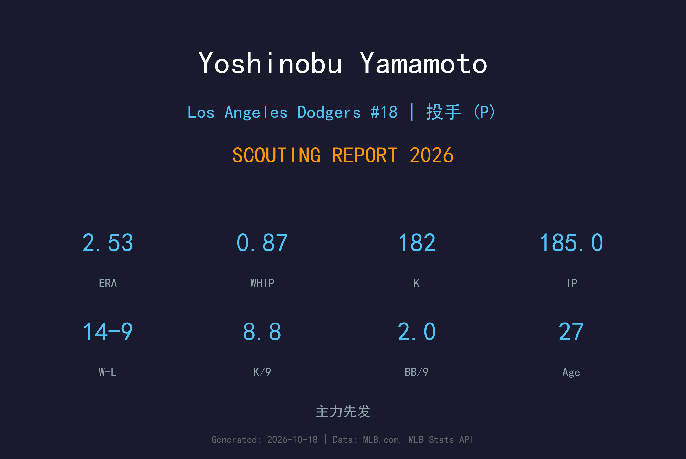
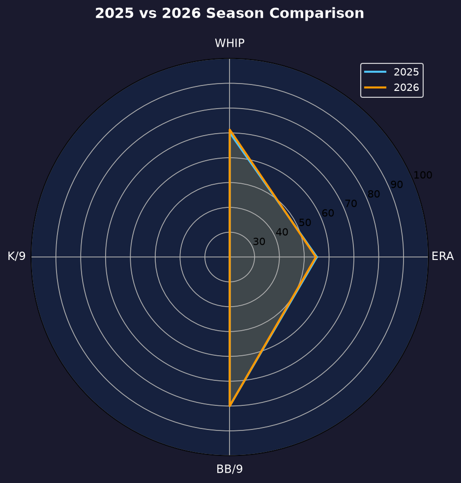
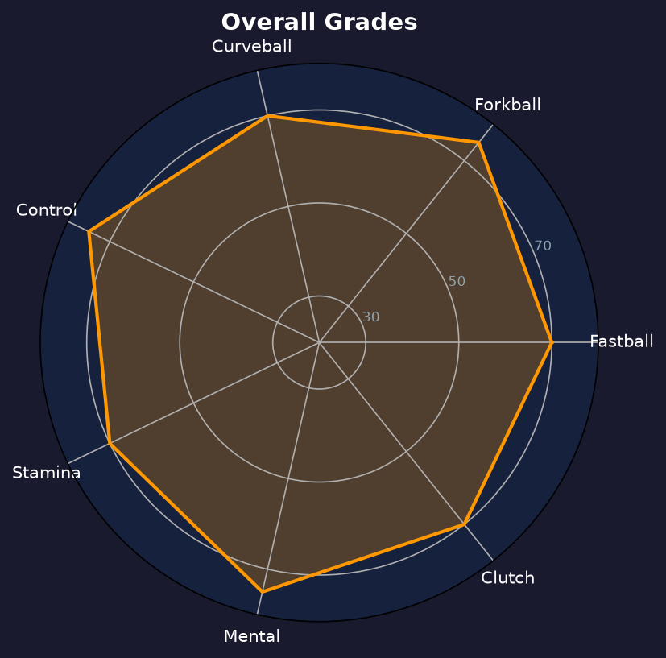

Los Angeles Dodgers #18 | 先发投手 | 右投 / 右打 | 令和怪物

山本由伸是道奇王牌、当今大联盟最顶尖的先发投手之一。他以 98-100mph 的速球、梦幻级指叉球与曲球组成的三球种体系，搭配 NPB 时代打磨出的极致控球，构成近乎无解的投球模板。
2026年他28场先发全部出赛，缴出14胜9败、2.53 ERA、0.87 WHIP、185局182次三振。WHIP 0.87 是全队先发最低，8.85 K/BB 比（182K/42BB）更是精英中的精英。虽然胜场数受牛棚与打线支援限制，但他的每一场先发几乎都是质量先发。
28岁的山本仍在巅峰上升期。他的目标早已不是赛扬奖入围，而是成为这个时代的第一投手——以及2027年把道奇带回世界大赛之巅。
欧力士时期三夺胜投王、防御率王，2023年率日本夺 WBC 冠军后透过入札制度赴美。
刷新当时投手合约纪录，首年即随道奇夺冠，成为日本球员新标杆。
14胜2.53 ERA、WHIP 0.87，28场先发全部达到质量先发门槛，赛扬奖票选大热门。

| 赛季 | GS | W-L | ERA | IP | SO | BB | WHIP |
|---|---|---|---|---|---|---|---|
| 2025 | 30 | 12-8 | 2.49 | 173.2 | 201 | 59 | 0.99 |
| 2026 | 28 | 14-9 | 2.53 | 185.0 | 182 | 42 | 0.87 |
2026年保送从59降至42、WHIP 从0.99降至0.87，控球再进化；被轰20支略多，与道奇体育场环境及球路被摸透有关。
球速：97-100 mph
评分：A+
山本的速球不只有速度——NPB 时代打磨的尾劲与 late life 让打者即使对准了也常挥空。速球命令是他的整套体系的锚。
球速：87-90 mph
评分：A+
他的招牌武器。下坠幅度如同掉下桌子，打者的棒子经常从球上方挥过。两好球后的杀人变速球。
球速：78-81 mph
评分：A-
用于搅乱打者 timing 的第三球种，旋转品质高，让打者无法只准备速球与指叉。
8.85 K/BB 比是全队最佳，也是联盟先发前列。185局仅42保送，平均每9局2.04保送——这种控球精度让他的速球可以在好球带边缘游弋，打者被迫在"追打坏球"与"落后球数"之间做选择。
20支被全垒打是他2026年最刺眼的数字。部分源于道奇体育场的好打者环境，但也反映打者越来越敢在他的速球首球就积极挥棒。当指叉球失准时，他会陷入球数战，少数几场爆炸局拉高了 ERA。
28场先发、185局、14胜——这是他赴美后最健康也最完整的一季。9场败投中有数场是2-1、3-2 的投手战失利，与 his performance 无关。他是道奇轮换唯一能真正"锁死"对手的投手，也是球队敢于在季后赛把他排在 G1 先发的唯一理由。

这个时代的第一投手候选，道奇王朝的基石
A+ 级 / 赛扬王牌
道奇 2026 季后赛战绩：NLDS 3-1 晋级、NLCS 0-4 止步。
| G | GS | W-L | IP | ERA | WHIP | SO | BB | H |
|---|---|---|---|---|---|---|---|---|
| 2 | 2 | 1-0 | 9.2 | 3.72 | 1.14 | 11 | 3 | 8 |
山本由伸的2027赛季只有一个目标：赛扬奖与世界大赛冠军。他的合约还长（2035年到期），道奇的王朝蓝图以他为轴心。健康是他唯一需要守护的资产。
2026：14-9、2.53 ERA、185IP——赴美后最完整的王牌赛季
2027：目标 15+ 胜、ERA 2.40 以下、首次赛扬奖
2028+：挑战 200 局、成为道奇队史最伟大的日本投手
山本由伸出生于日本冈山县备前市，高中时期就是全国知名的天才投手。2017年加入欧力士野牛后，他迅速统治日本职棒——连续三年包揽胜投王与防御率王，拿下泽村赏，2023年更以王牌身份率日本队夺得世界棒球经典赛冠军。
2024年，他通过入札制度与道奇签下12年3.25亿美元的历史级合约，首年即随队夺得世界大赛冠军。他的成功让"令和怪物"的称号传遍全球，也成为日本球员赴美的新标杆。
场外的山本低调谦逊，以严格的训练纪律著称。他的日常生活几乎只有棒球——从饮食到睡眠都有详细记录，这种职业态度让他在28岁就拥有老将般的身体管理意识。